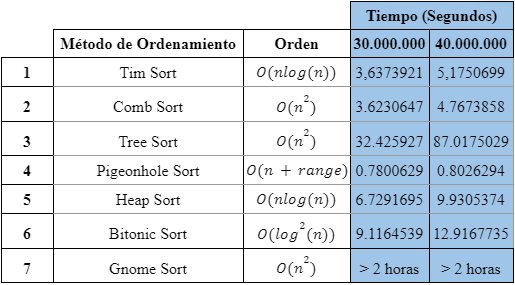

En esta primera sección vemos el primer grafico de barras, que representa el tiempo de ejecucion obtenido por cada metodo de ordenamiento usando un arreglo con un tamaño de 40 millones y numeros con 8 digitos, en el (eje x) tenemos el nombre del metodo y en el (eje y) tenemos el tiempo en segundos, es importante aclarar que el metodo de ordenamiento GnomeSort no es que haya tardado 100 segundos en ordenar lo que sucede es que se ha puesto un limite de 100 segundos, este limite esta puesto dentro del calculo de tiempos de ejecucion en el algoritmo en Java, ya que este algoritmo es el mas ineficiente de todos, por lo que el tiempo es exageradamente distante con los otros metodos.
En esta segunda sección vemos el segundo grafico de barras, que representa el tiempo de ejecucion obtenido por cada metodo de ordenamiento usando un arreglo con un tamaño de 30 millones y numeros con 8 digitos. en el (eje x) tenemos el nombre del metodo y en el (eje y) tenemos el tiempo en segundos. Para esta grafica tambien aplica la restriccion de los 100 segundos mencionada anteriormente.
En esta tercera sección vemos una tabla de resultados, que representa el tiempo de ejecucion obtenido por cada metodo de ordenamiento usando los dos arreglos propuestos, facilitando la comparacion entre los tiempos, es interesante como tiempo de ejecucion del algoritmo GnomeSort supera las dos horas en ambos caso, ya que es el mas ineficiente de todos, porque va comparando posicion a posicion y re ordenando, el tiempo tomado para terminar la ejecución nos es desconocido, pero podemos asegurar que tarda mas de 2 horas.
Esta grafica representa la informacion de la tabla, tomando unicamente los datos de ejecucion con un tamaño de 40 millones, es decir el arreglo mas grande.